IMY
Bienvenue ! Je suis Imy
et ici vous trouverez
mon univers visuel
UNIVERS VISUEL
Dans cette page, vous trouverez mes préférences et curiosités culturelles, artistiques,
littéraires, technologiques, et environnementales, ainsi que mes inspirations et curiosités
dans le domaine du design graphique et numérique.
CULTURES DU MONDE
La diversité et la richesse culturelle qui existent dans le monde m'inspirent énormément dans ma vie, et dans ma vision de l’art. La culture du Maroc m'intéresse et me fascine particulièrement.

Rues de Marrakech | Maroc
Max Brown, Unsplash.com
Homme Maasai | Kenya
Sneha Cecil, Unsplash.com
Le temple Senso-ji | Japon
Liam Burnett-Blue, Unsplash.com
Colisée | Italie
Catherine Chu, Unsplash.com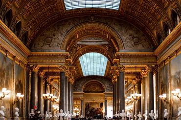
Château de Versailles
Louis Paulin, Unsplash.com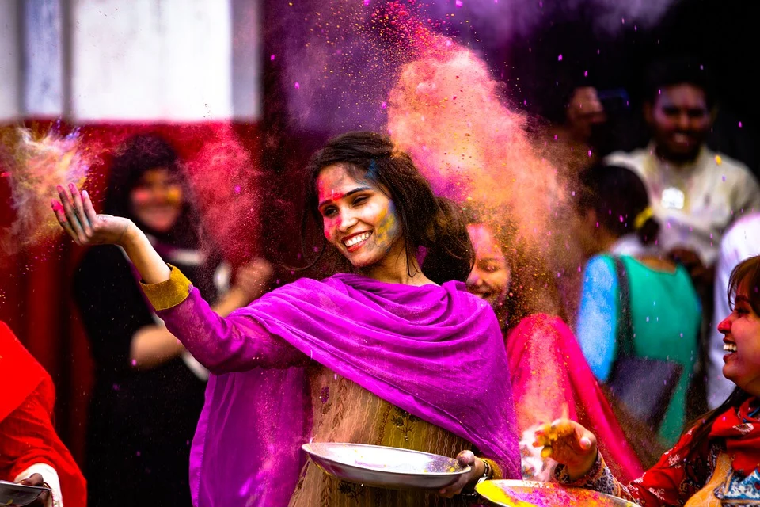
Festival Holi | Inde
Murtaza Ali, Pixabay.comMUSIQUE
Ma passion pour la diversité culturelle transparaît dans mes goûts musicaux. J’aime écouter des styles très différents, tels que la musique Bollywood, la pop, le rap, la soul, l’afrobeat, le R&B, et plein d’autres.

Aishwarya Rai

Burna Boy

Capo Plaza
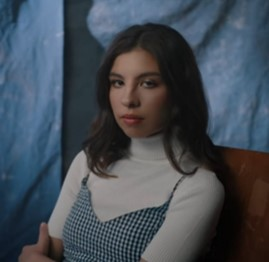
Tash Palmer
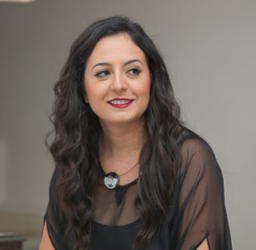
Nabyla Maan

Bill Whiters
FILMS
Ces deux films sont ceux qui m’ont marqué le plus. Le premier traite de l’innocence de l’enfance, et le deuxième reflète le grand combat que peut être la vie.

L'Été où j'ai grandi (Io non ho paura) - 2003
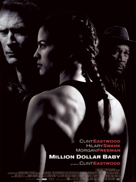
Million Dollar Baby - 2004
STYLISTE
La mode m’intéresse fortement, et je suis ses nouvelles tendances de très près. Mon styliste préféré est Simon Porte Jacquemus. J’aime ses coupes simples, mais à la fois très originales. Les couleurs qu’il utilise rappellent le soleil, le sud de la France, et la méditerranée.
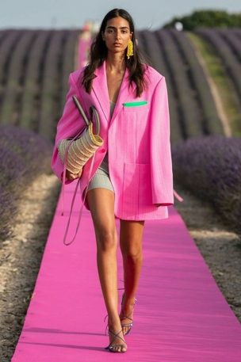
@jacquemus (Instagram)
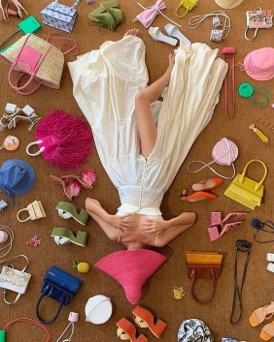
@jacquemus (Instagram)
ILLUSTRATRICE
Mon illustratrice préférée est Roeqiya Fris. L’artiste crée des illustrations aux couleurs très vives et aux influences orientales. Ses illustrations m’incitent à travailler davantage les détails et les motifs dans mes peintures et dessins.

@roeqie (Instagram)
RENAISSANCE
La Renaissance, en tant que période de l'histoire et mouvement artistique, me fascine énormément. L’artiste que j’admire le plus durant cette époque est Michel Ange. Je trouve ses chefs-d'œuvre très mystérieux et d’une précision extraordinaire.
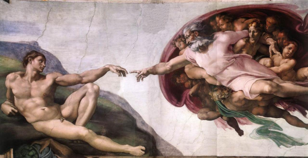
La Création d'Adam (1508 – 1512) – Michel Ange
ART NUMERIQUE
Uğur Gallenkuş est un artiste digital qui réalise des montages photo poignants, dans le but de susciter une prise de conscience sur les inégalités et les injustices sociales qui existent.
Cette image m’a particulièrement touché. On peut voir à gauche la main d’un enfant ouvrier du Bangladesh qui travaille en usine, et à droite la main d’un enfant qui fait de la peinture.
Cette image m’a particulièrement touché. On peut voir à gauche la main d’un enfant ouvrier du Bangladesh qui travaille en usine, et à droite la main d’un enfant qui fait de la peinture.
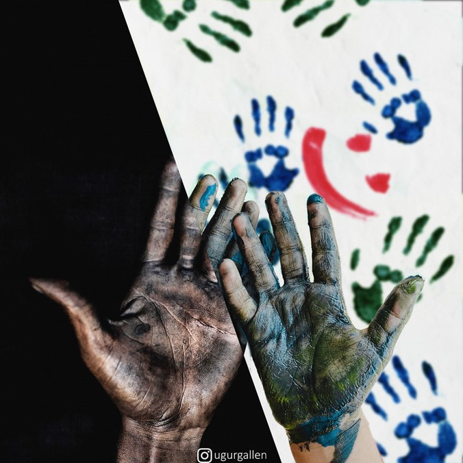
@ugurgallen (Instagram)
poésie
En termes de littérature, j’aime la poésie. Ce poème émouvant et rempli d’espoir de Jacques Prévert fait partie de mes préférés.
Le bonheur, en partant, m'a dit qu'il reviendrait...
Que quand la colère hisserait le drapeau blanc, il comprendrait...
Le temps du pardon et du calme revenu, il saurait
Retrouver le chemin de la sérénité, de l'arc-en-ciel et de l'après...
Le bonheur, en partant, m'a promis de ne jamais m'abandonner
De ne pas oublier les doux moments partagés,
Et d'y écrire une suite en plusieurs volumes reliés,
Tous dédiés à la gloire du moment présent à respirer...
Le bonheur, en partant, m'a fait de grands signes de la main,
Comme des caresses pleines de promesses sur mes lendemains,
Il m'a adressé ses meilleurs vœux sur mon destin qui s'en vient,
Et je crois en lui bien plus qu'en tous les devins...
Le bonheur est un ange aux ailes fragiles, un colosse aux pieds d'argile,
Il a besoin d'air, de lumière, de liberté et d'une terre d'asile,
Je veux être son antre dès ses premiers babils,
Pour peu qu'il me le permette, le bonheur n'est jamais un projet futile...
Le bonheur, en partant, avait le cœur aussi serré que le mien,
Son sourire en bandoulière, il est parti vers d'autres chemins,
Rencontrer ses pairs au détour des larmes et des chagrins,
Que versent pour un rien, tous ces pauvres humains...
Le bonheur, est parti, missionnaire, rallier d'autres fidèles,
Il veut plaider sa cause et convertir tous les rebelles,
Leur montrer à eux aussi, combien la vie est belle,
Si on lui laisse assez de place pour l'orner de ses dentelles...
Le bonheur, en partant, m'a fait un clin d'œil,
Je sais qu'il reviendra, je ne porte pas son deuil,
Il ne fuit pas, il s'en va conquérant réparer d'autres écueils,
Pour me revenir encore plus grand, se reposer dans mes fauteuils...
Le bonheur, en partant, ne me quitte pas vraiment...
Je sais que même de loin, il éveille mes sentiments,
Il entend mes hésitations et m'oriente résolument et surement,
Le bonheur est une étoile qui me guide par tous les temps…
Jacques Prévert
Que quand la colère hisserait le drapeau blanc, il comprendrait...
Le temps du pardon et du calme revenu, il saurait
Retrouver le chemin de la sérénité, de l'arc-en-ciel et de l'après...
Le bonheur, en partant, m'a promis de ne jamais m'abandonner
De ne pas oublier les doux moments partagés,
Et d'y écrire une suite en plusieurs volumes reliés,
Tous dédiés à la gloire du moment présent à respirer...
Le bonheur, en partant, m'a fait de grands signes de la main,
Comme des caresses pleines de promesses sur mes lendemains,
Il m'a adressé ses meilleurs vœux sur mon destin qui s'en vient,
Et je crois en lui bien plus qu'en tous les devins...
Le bonheur est un ange aux ailes fragiles, un colosse aux pieds d'argile,
Il a besoin d'air, de lumière, de liberté et d'une terre d'asile,
Je veux être son antre dès ses premiers babils,
Pour peu qu'il me le permette, le bonheur n'est jamais un projet futile...
Le bonheur, en partant, avait le cœur aussi serré que le mien,
Son sourire en bandoulière, il est parti vers d'autres chemins,
Rencontrer ses pairs au détour des larmes et des chagrins,
Que versent pour un rien, tous ces pauvres humains...
Le bonheur, est parti, missionnaire, rallier d'autres fidèles,
Il veut plaider sa cause et convertir tous les rebelles,
Leur montrer à eux aussi, combien la vie est belle,
Si on lui laisse assez de place pour l'orner de ses dentelles...
Le bonheur, en partant, m'a fait un clin d'œil,
Je sais qu'il reviendra, je ne porte pas son deuil,
Il ne fuit pas, il s'en va conquérant réparer d'autres écueils,
Pour me revenir encore plus grand, se reposer dans mes fauteuils...
Le bonheur, en partant, ne me quitte pas vraiment...
Je sais que même de loin, il éveille mes sentiments,
Il entend mes hésitations et m'oriente résolument et surement,
Le bonheur est une étoile qui me guide par tous les temps…
Jacques Prévert
nature
La nature est sans doute ma plus grande source de bien-être et surtout d’inspiration. Ses couleurs, textures, sons, parfums et odeurs offrent un champ d’inspiration infini.
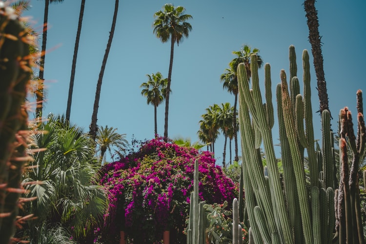
Alex Plesovskich / Unsplash

Baishev / SHUTTERSTOCK
design d’intérieur
Le design d'intérieur est un domaine que j’apprécie énormément. J’aime comment un espace peut être pensé, aménagé et décoré avec différentes matières, couleurs et objets, afin de créer un ensemble harmonieux et agréable.

Design de Ami McKay | Vancouver Interior Design
Sources d’inspiration
Enfin, je dirais que je m'inspire un peu de tout, de ce que j'observe, de mes sentiments, de la société, des amis, d’une conversation, des objets, des saisons etc. Il n’y a pas de limites en termes de sources d’inspiration.
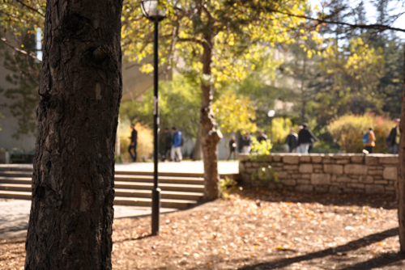